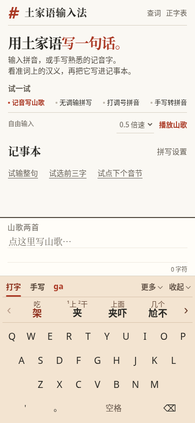
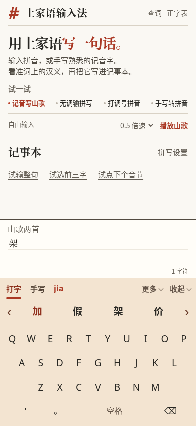

安卓试用版 0.3.3
在记事本里写一首山歌
跟着毕兹学堂龙山《山歌两首》的第一首，在记事本里写完四行。片末另开一则笔记，演示点按预测音节后怎样直接接着写。
Android 6.0 及以上 · 测试签名
- 我们都是土家族，
- ngánī húnī bízīkǎ ō，
- 唱山歌都用土家语，
- sānggō cáng diē bízīsǎ ō，
启用键盘
- 安装 APK，打开「土家语输入法」。
- 点「在系统设置中启用」，打开土家语输入法的开关。
- 回到应用，点「选择土家语键盘」，再点任意输入框。
两种拼写
输入 aizu，看汉义“从前”。设置里选「带调号拼音」会写入 āizū，选「叶氏拼音」会写入 aixzux。
要直接打调号，长按元音键再选声调。试打调号拼音
按词义选字


候选与手写
一行看四项。有汉义时在词上方显示一个简短释义，单纯记音的字只显示字形。可以连打几个词，选中长词后，再为剩余拼写选词。普通汉语字词排在土家语词后面。看四个候选

输入 go，“他”和“讨”共用一张「过」卡。上方依次列出“¹他 ²讨”，点一次只写入「过」。长按可读完整释义，包括借词“过错”。输入 gǒ 或 gor 可选表示“他”的「郭」。试打 go · 看候选

用土家语拼写 ga 或 gaf 找「架」，候选上方会标“吃”。用 jia 找同一个汉字时，卡片只显示「架」。西南官话确有文白读音的字可用两种拼写查找，例如 jiazi 和 gazi 都能输入「夹子」，xie 和 hai 都能输入「鞋」。查吉首、重庆字音表
对照 ga 和 jia 的候选


ga · 土家语词

jia · 汉字读音网页试打跟随浏览器字号。对照同一窄屏的默认字号和160% 字号。


写下「波」后稍停即可接着写「俐」，还可以点上方“小孩”对应的词补全「波俐」。
读《山歌两首》第一首
我们都是土家族，
唱山歌都用土家语，
唱一句土家山歌，
唱得不好别怪我。